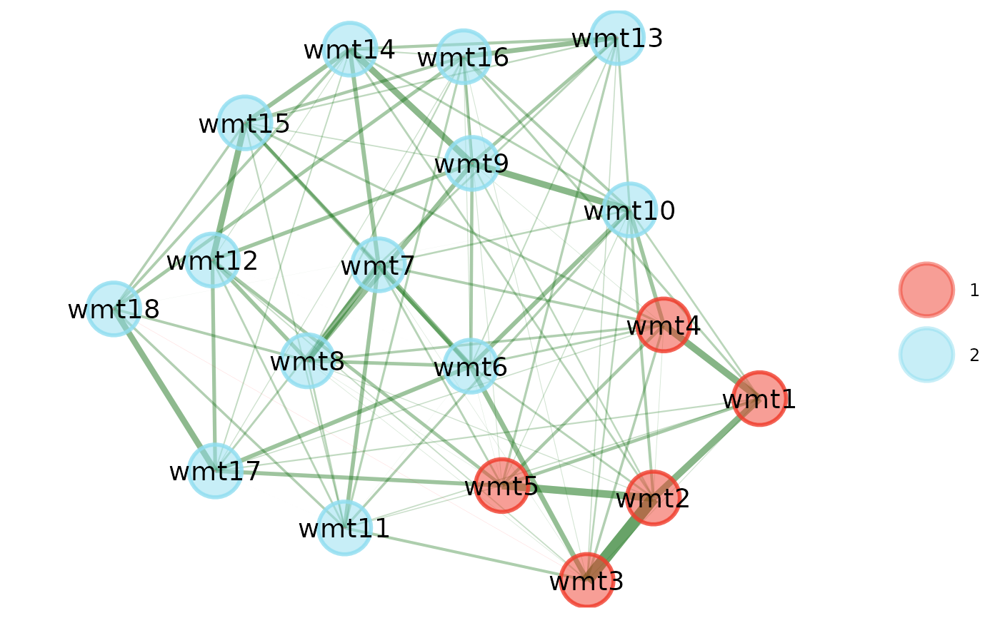

Computes (signed) modularity statistic given a network and community structure. Allows the resolution parameter to be set
Arguments
- network
Matrix or data frame. A symmetric matrix representing a network
- memberships
Numeric (length =
ncol(network)). A numeric vector of integer values corresponding to each node's community membership- resolution
Numeric (length = 1). A parameter that adjusts modularity to prefer smaller (
resolution> 1) or larger (0 <resolution< 1) communities. Defaults to1(standard modularity computation)- signed
Boolean (length = 1). Whether signed or absolute modularity should be computed. The most common modularity metric is defined by positive values only. Gomez et al. (2009) introduced a signed version of modularity that will discount modularity for edges with negative values. This property isn't always desired for psychometric networks. If
TRUE, then this signed modularity metric will be computed. IfFALSE, then the absolute value of the edges in the network (usingabs) will be used to compute modularity. Defaults toFALSE
References
Gomez, S., Jensen, P., & Arenas, A. (2009). Analysis of community structure in networks of correlated data. Physical Review E, 80(1), 016114.
Examples
# Load data
wmt <- wmt2[,7:24]
# Estimate EGA
ega.wmt <- EGA(wmt, model = "glasso")

# Compute standard (absolute values) modularity
modularity(
network = ega.wmt$network,
memberships = ega.wmt$wc,
signed = FALSE
)
#> [1] 0.1697952
# 0.1697952
# Compute signed modularity
modularity(
network = ega.wmt$network,
memberships = ega.wmt$wc,
signed = TRUE
)
#> [1] 0.1701946
# 0.1701946